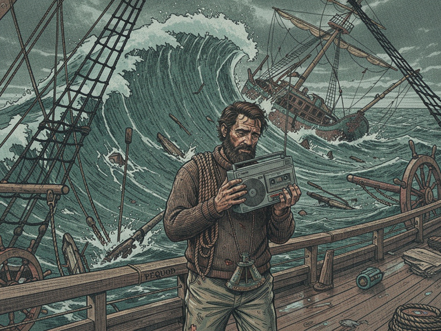

The *Pequod* listed, groaning like a dying beast. Not the shudder of storm-tossed timber, but something deeper—a tearing sound from below, a wounded tremor that vibrated through Ishmael's bones and teeth. Fedallah's explosive harpoon, that desperate shot meant to cripple, had become a boomerang of destruction. The White Whale, instead of falling victim, had erupted from the depths directly beneath them, a leviathan missile of bone and blubber, impacting the hull with tectonic force.
Water poured into the lower decks, an icy torrent that drowned the frantic shouts from the engine room. The lights flickered, coughed, died in sections, plunging corridors into Stygian gloom broken only by the swing of lanterns and the desperate beams of flashlights. The ship's communication systems, already fragile, had been severed entirely. They were deaf, dumb, and sinking.
"We're taking on water faster than the pumps can handle, Captain!" Starbuck's voice, usually a steady anchor, frayed thin—almost a shriek. He stood before Ahab on the bridge, his face slick with sweat and grime, one hand pressed against the listing console as if trying to hold the ship upright through sheer will. "The starboard side's torn open. We've lost a boiler. We'll be swamped inside the hour."
Ahab braced his good leg against the tilt and ignored the pragmatic terror in Starbuck's eyes. His own gaze, intensified by the loss of Fedallah and the fresh wound of his ship, fixed on the vast grey expanse of sea as if he could pierce its depths and locate his tormentor. The radar and sonar screens remained dark—dead eyes staring into nothing. Fedallah's high-tech oracle had gone silent.
"The White Whale did this," Ahab rasped, his voice a dry rattle that held the weight of an ancient curse. "He will pay."
Ishmael, wedged in a corner of the bridge, fumbled with his cassette recorder. The plastic shell felt cold, clammy against his palm. He pressed record. The whir of the tape was a small, fragile sound against the orchestral chaos of the dying ship. *"Day… unknown. The Pequod is broken. Fedallah is lost. Ahab… he sees only one end now. It is upon us."*
Queequeg emerged from the engine room hatch, his face streaked with oil and ash, his breath ragged and tasting of smoke. "She's going down, Ahab. I can patch the pumps, but the hull… it's a death-wound. No more than thirty minutes before she rolls." His voice carried a grave resignation, tinged with sorrow that spoke not just of the ship, but of the spirits within it.
"Thirty minutes is all I need." Ahab turned from the viewport to the main console and slammed his fist down. "Lower the last launch. Prepare the spare harpoons. We go to him."
Starbuck gaped. "Captain, no! The ship is dying! We must abandon her, try to signal for help!"
Ahab fixed him with a stare so venomous that Starbuck flinched back. "Abandon? This is my ship, Starbuck. And that is my quarry. You will do as commanded, or you will drown with me. Better men have chosen that fate."
Stubb staggered onto the bridge, nursing a half-empty bottle of rum, his face pale beneath his customary smirk. "Might as well, Starbuck. At this rate, we're all fish food anyway. Might as well get a good view of the main event." He took a long swig, his eyes clouded with morbid despair.
Ishmael recorded it all: the groan of bulkheads, the crash of unsecured equipment sliding across tilted floors, the rising pitch of water inside the hull. He could hear the low, frantic shouts of the remaining crew, their movements clumsy and desperate on the canting deck. They were trying to ready the launch—a small, open boat barely bigger than a lifeboat, meant for short excursions, not a final charge against a monster.
Ahab, ignoring pleas, warnings, and gallows humor alike, stumped off the bridge, his gait more determined, more furious than ever. His harpoon—a monstrous, antique weapon—was strapped to his back, a grotesque counterpoint to the useless high-tech gear surrounding them.
Below, the sea was an angry, choppy grey. The *Pequod* dipped further, waves now washing over the main deck. The launch dangled from its davits, swinging wildly, threatening to smash against the hull. Queequeg, ignoring Ahab's command, moved with quiet, efficient grace, securing ropes, helping men onto the launch with fatalistic calm. He saw the end, but he would ensure it was met with dignity—or as much as could be salvaged.
"Starbuck, you coming?" Stubb yelled over the din, already halfway into the launch, his rum bottle clutched tight.
Starbuck hesitated, his eyes torn between the dying ship, the departing Ahab, and the faces of the crew he was sworn to protect. He looked at Ishmael—a silent plea for understanding, or perhaps forgiveness. Then, with a sigh that seemed to carry the weight of all the failed mutinies and moral compromises, he climbed into the launch. He wouldn't abandon Ahab. Not even now.
Ahab stood in the bow of the launch, gripping the harpoon, his face illuminated by the stark grey light of the unforgiving ocean. The small craft bobbed precariously as the engine sputtered to life, straining against the pull of the sinking *Pequod*.
Then, a ripple. Not a wave, but a disturbance in the water—impossibly vast, impossibly close. The surface bulged, a shimmering, living mountain of white.
The White Whale.
It rose from the depths with terrifying slowness, its albino skin gleaming wetly, scarred with a thousand battles. Its immense head—a colossal battering ram—turned toward the *Pequod*, then, with almost deliberate malevolence, toward the small launch. It seemed to survey the wreckage, the dying ship, the desperate men, with ancient, knowing intelligence.
"There!" Ahab roared, his voice raw, triumphant—the sound of a man who had waited his entire life for this precise moment. "He comes!"
The launch engine roared as Queequeg pushed it to its absolute limit, away from the sinking *Pequod*, toward the rising whale. Ishmael clung to the stern, his recorder held high to keep it dry, documenting the final, insane charge. The *Pequod* behind them let out a final groaning shriek of tortured metal as its stern rose high, then plunged into the waves, pulling itself under in a vortex of foam and debris.
The whale paid it no mind. Its attention fixed on the launch. On Ahab.
Ahab stood, impossibly balanced, a modern Samson with a relic weapon. He raised the harpoon, its polished steel tip glinting, ancient and deadly. "For Fedallah! For the *Pequod*! For all that you have taken!"
The whale, now fully surfaced, dwarfed the launch—a living island of blubber and bone. It opened its massive jaws, not in aggression, but in a display of raw, indifferent power, a chasm of white baleen and black throat.
Ahab hurled the harpoon.
It flew true, a silver dart against the grey sky, and struck the whale's flank with a sickening thud. The whale shuddered, a colossal tremor that sent waves washing over the launch, almost capsizing it.
But the whale did not cry out. It did not flee.
Instead, it dove.
With a powerful flick of its immense tail, the whale descended, pulling the harpoon line taut, dragging the launch with it. The rope, thick as a man's arm, hissed as it ran over the gunwale, smoking from the friction.
"Hold on!" Starbuck screamed, bracing himself against the thwart.
Ahab, however, did not brace. He was caught in the snaking, coiling line—a desperate knot tightening around his ivory leg. His eyes, wide and horrified, met Ishmael's for a fleeting second, not with anger, but with dawning realization of the futility of it all, of the terrifying, absolute power of nature.
Then, with a final, violent jerk, the line pulled taut. Ahab, trapped, was ripped from the launch. He tumbled head over heels, a scarecrow figure dragged into the churning vortex left by the descending whale. His last, guttural cry was swallowed by the sea.
The line snapped free of the launch. The small boat, suddenly released, was tossed violently, spinning in the furious wake. Men screamed, thrown against each other. Ishmael felt a crushing impact, a blinding flash of pain, and then the icy, choking blackness of the ocean.
His fingers, by some miracle, still clutched the cassette recorder. He felt the cold, hard plastic, the faint whir of the tape still turning, documenting the silence, the cold, and the end of the *Pequod*.
And then, silence. Only the vast, empty sound of the deep.